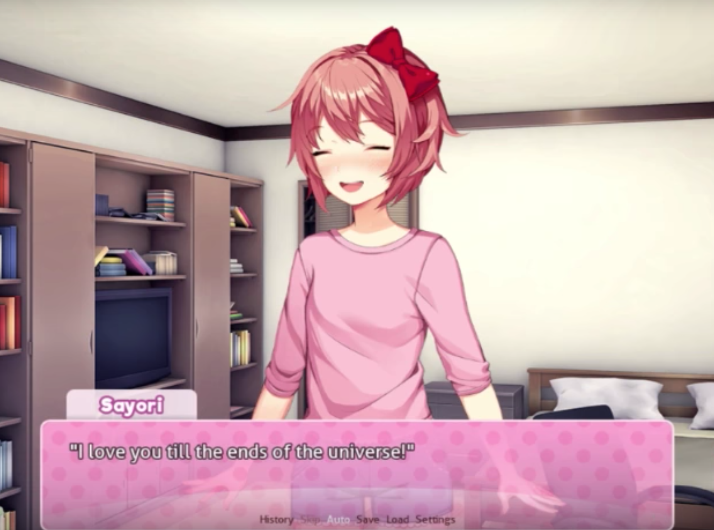

DDLC Normal VN
E se DDLC fosse o que todos esperávamos dele: uma visual novel divertida e feliz, onde você pode namorar uma das quatro garotas oferecidas no jogo? E se Monika tivesse sua própria rota desde o início, e nunca deletasse ninguém?
⬇ Download